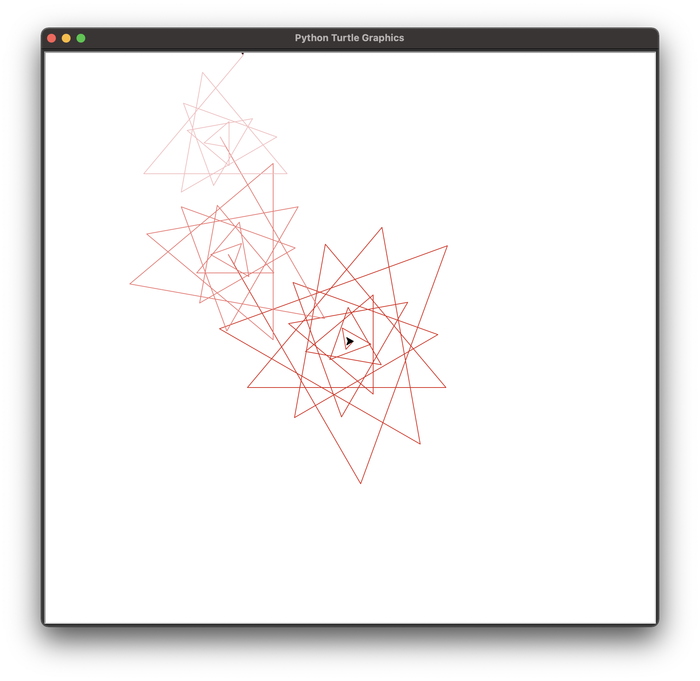

Return to Home
Other pages: Python | HTML | JavaScript
Turtle graphics are a form of vector graphics that were often used to introduce programming to children. For this challenge in INFOTEC 1000, we were instructed to create images by using Python to program the Turtle graphics. For more about my usage of Python, check here.
Here is a common type of graphic created using Turtle graphics:
For this challenge, Turtle graphics were used in order to teach us:
The code I used is shown below:
import turtle
flower = turtle.Turtle()
ANIMATION_SPEED = 10
#main red flower
flower.pencolor("#DC1C13")
for i in range(25):
flower.forward(i * 15)
flower.right(130)
#medium pink flower
flower.pencolor("#F07470")
for i in range(20):
flower.backward(i * 15)
flower.left(130)
# smaller pink flower
flower.pencolor("#F6BDC0")
for i in range(15):
flower.forward(i*15)
flower.right(130)
turtle.speed(ANIMATION_SPEED)
turtle.done()
The output of this code results in this image: 
Here is some explanation of the basic Turtle methods as shown in the code above:
| Name of Method | Explanation |
|---|---|
| .forward/.backward | - moves the turtle forwards or backwards based on value and direction given |
| .right/.left | - turns the turtle right or left depending on the value of degrees specified |
| .pencolor | - changes the color of the line drawn by the turtle |
| .speed | - determines how fast the turtle is animated, 10 is fast |